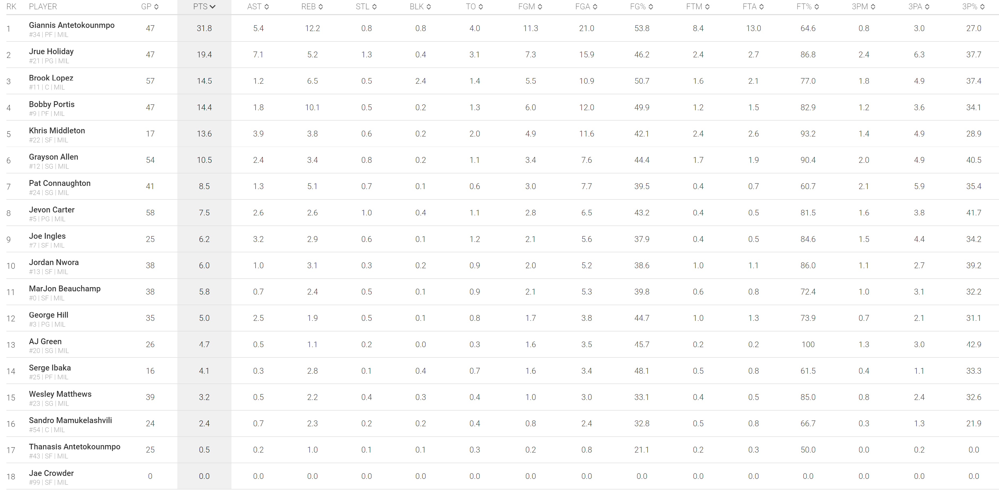
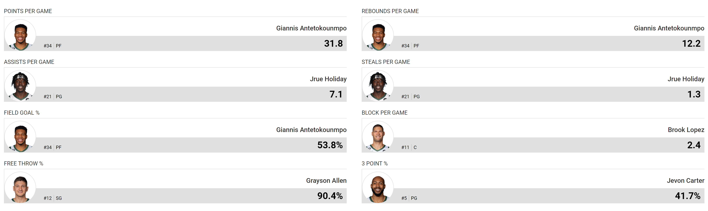

Check out the latest individual and team stats for the Milwaukee Bucks on this page. Here, you can find stats for key players like Giannis Antetokounmpo, Khris Middleton, Jrue Holiday, Brook Lopez, and Bobby Portis. We also provide team stats, such as points per game, rebounds per game, assists per game, and more. Use this page to keep up with how the Bucks are performing throughout the season and see who's leading the team in different categories.
Individual Stats
Team Leaders
Team Stats